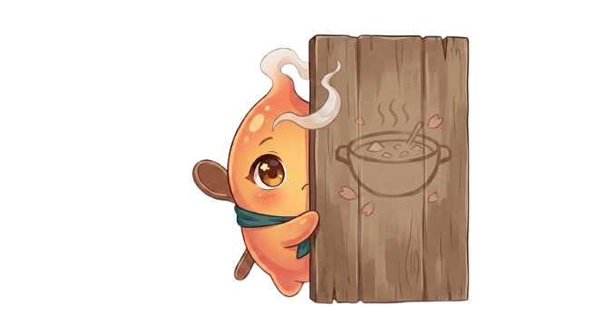

Every scroll in the collection
The Grimoire
Filter by quest type, dietary school, or difficulty — or just type what you're craving.
Recipe results

No scrolls match that incantation
Try fewer filters, or a different search term — the grimoire is still growing.